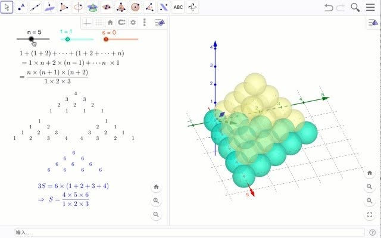
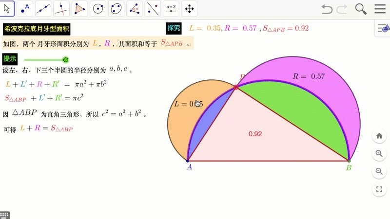
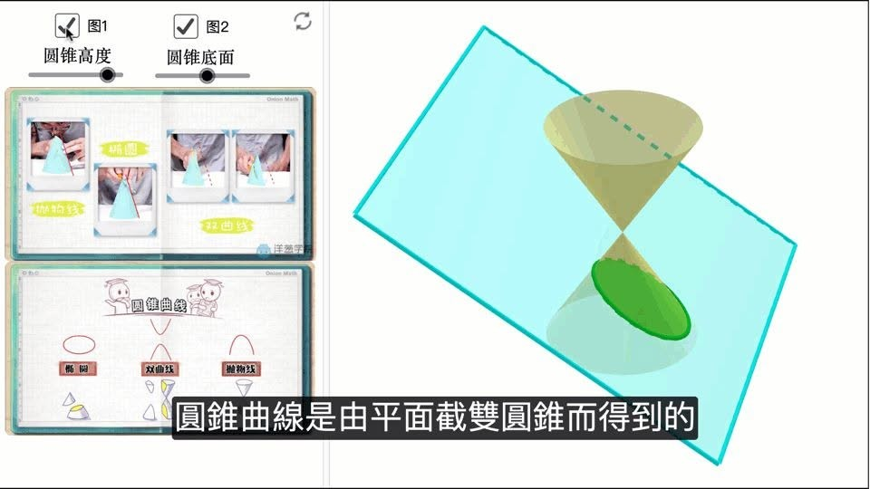
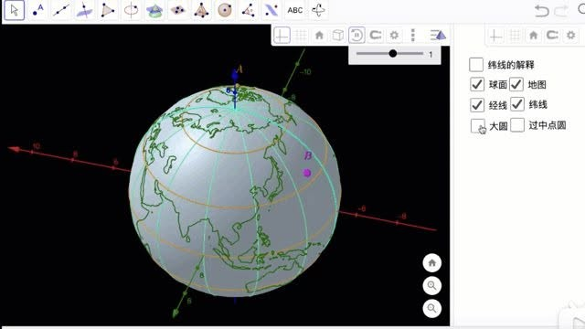
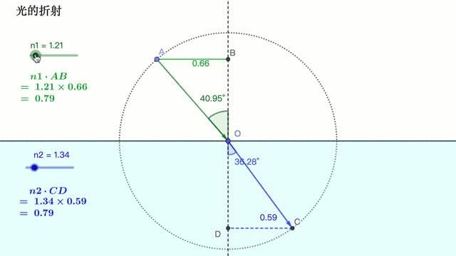

獵豹 朱安強博士
GGB程式設計 免費直播體驗課
2021/11/14 (日) 上午10:00～11:00
報名請私訊星媽「孩子姓名學校年級」
請務必先利用時間完成下方課前要求
程式設計課程有兩大體系
大家好，我是Kevin老師，獵豹目前合作開設的程式設計課程有兩大體系，其中一個體系就是朱安強博士的Python系列與GGB系列，本週日上午就針對擁有國小六年級數學程度的孩子開設免費體驗課，歡迎報名參加。
獵豹一貫是「找有特色的高手」來開課，而朱安強博士的特色就是兼具「高度」、「經驗豐富」以及「橫跨數學與程式設計領域」。

獵豹強烈推薦的人選
朱安強博士是非常知名的數學與程式設計教育專家，本身就是數學資優生，保送台大數學系，之後憑著優異成績進入碩士班，也獲得過中華民國數學會的碩士論文獎，最後在台大資工取得博士學位，之後一直在兩岸最著名的一些線上教育機構從事教學研究工作，包括均一教育以及洋蔥數學等。如果有數理資優的孩子想要找個具備足夠高度與寬廣視野且經驗豐富的老師帶領進入程式設計的天地，那麼朱博士絕對是獵豹強烈推薦的人選。

GGB程式設計
GGB的全名是GeoGebra，這是目前全世界超過一億人使用的動態數學軟體，它本身就有自己的程式語言，配合其特有的圖像顯示與互動、操作能力，非常適合小學到國中階段的孩子作為學習程式設計的選項，可以讓孩子直接從作品的動態圖像顯示看到具體的成果並獲得成就感，並且可以繼續銜接Python或其他進階語言。
您想要讓孩子開始接觸程式設計了嗎？歡迎參加朱安強博士的GGB免費體驗課！

能力評估
本門課主要通過操作製作數學動畫與小程式來認識數學。需要有些基本的電腦操作能力。
參加前要評估是否有合適的能力，需要學生能觀看教學影片來完成基礎操作。
要參加體驗課的需在課前完成以下 4 個任務。
請記錄這四個任務完成所需的時間，並寫下這四個任務對小孩學習的難易度。

[GGB 1] 註冊 GGB 帳號參考如下影片
https://www.youtube.com/watch?v=Hg8L6LmJs44......
[GGB 2] 第一個 GGB 作品 共邊的正多邊形
https://www.youtube.com/watch?v=_zGHmyM1nG0......
[GGB 3] 同底等高的三角形
https://www.youtube.com/playlist......
[GGB 4] 旋轉的太極圖
https://www.youtube.com/playlist......
https://www.facebook.com/groups/695697124716309/permalink/923310021955017/
